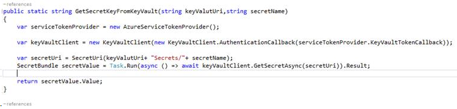

Azure Key vault is used to store secrets. To invoke SCALE web services from azure functions, bearer token is required. Please refer topic Generating bearer token(Client Credentials Grant with SCALEUser role token) to know how to generate bearer token. This logic requires API Confidential client secret key. As the key cannot be shared, this can be stored in azure key vault as a secret and can be retrieved in azure function by its URI(DNS name) and secret name.
Creating new key vault
- Log on to the azure AAD portal.
- From the dashboard, select Create a resource > Security> Key Vault.
- Create key vault pane, assign a name for vault.
- Choose a subscription from the list of available subscriptions.
- Select a resource group.
Using the key vault in azure functions
- Once the key vault app is created, please note down the DNS name from overview.
- Then add secrets from the settings and store secret key, please note down the secret name.
- Secret name and DNS name are required while retrieving the secret key from the key vault in azure function.
- In the access polices, choose the azure function app from where we are accessing the key vault.
- Also enable Managed service identity for the selected azure function app. This can be found in the platform features.
Piece of code using which secret key can be retrieved from the key vault.

Useful links:
Please refer the following links for performance considerations of azure functions.